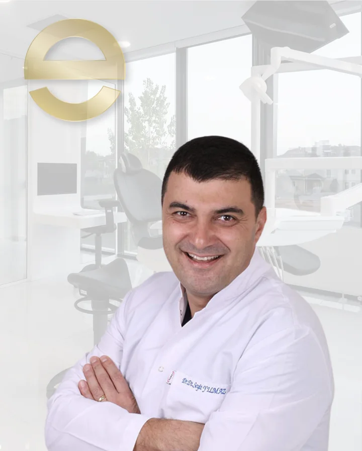
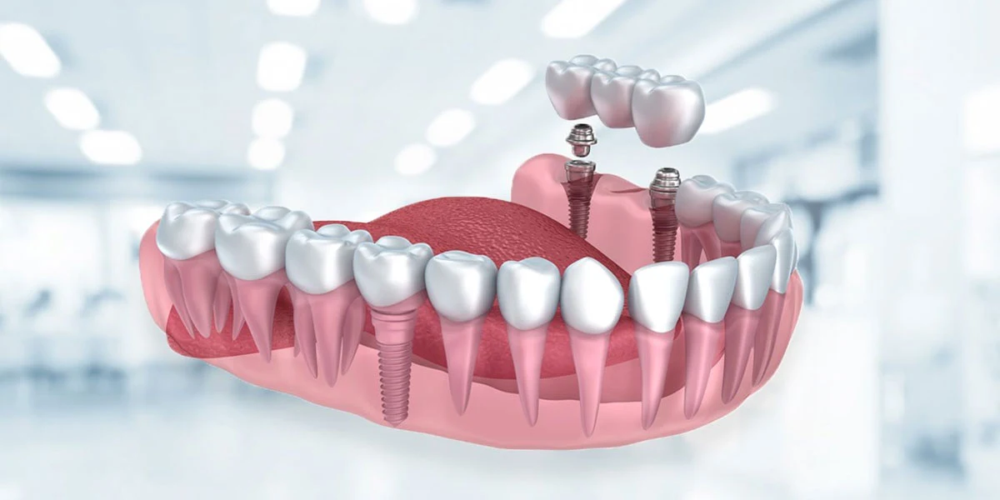

Dr. Dt. Seyit Yılmaz
Ağız, Diş ve Çene Cerrahisi Uzmanı
Serdivan Merkez Şubesi · Özgeçmişi Gör →Dentsply Sirona 3B volümetrik tomografi (CBCT) rehberliğinde klasik dental implantlardan ileri kemik erimesinde Khoury otojen kemik nakli, sinüs lifting, zigomatik implant (ZAGA) ve tam donanımlı ameliyathanede genel anestezi/sedasyon altında gömülü 20 yaş ve çene kisti cerrahisine uzanan bütüncül cerrahi merkez.
Dentsply Sirona 3B Volümetrik Görüntüleme ile güvenli cerrahi açı planlaması.
İleri kemik kaybı olan çenelerde sabit protez için biyolojik altyapı inşası.
Çene cerrahisi ve protetik uzmanlığının ortak konsey planlaması.
Anestezi uzmanımız gözetiminde çoklu cerrahi ve gömülü diş operasyonları.

Merkezimizde klasik implant uygulamalarının yanı sıra; ileri kemik kaybı olan vakalarda Atrofik Çene Rekonstrüksiyonu (Khoury Tekniği ile Kemik Nakli), Açık ve Kapalı Sinüs Lifting, Zigomatik İmplantlar (ZAGA Yaklaşımı), Dört İmplant Üzerinde Sabit Protez (All-on-Four), Sinir Kanalına Komşu Gömülü Diş ve Kist Cerrahisi üç boyutlu tomografi (CBCT) ve dijital iş akışıyla uygulanmaktadır.
📚 Kliniğimizin Uluslararası Hakemli Yayını (Int J Implant Dent. 2020;6(1):77): Uzman hekimlerimiz Dr. Dt. Gökhan Uzel ve Dr. Dt. Seyit Yılmaz'ın Evdiş Sakarya'da 42 tam dişsiz hastada uygulanan 171 implant ve aynı gün sabit geçici protez protokolünü inceleyen klinik çalışması uluslararası literatürde yayımlanmıştır (doi:10.1186/s40729-020-00271-1).
Sakarya Serdivan Merkez Şubemizde (İstiklal Mah. 2. Cad. No: 13, Serdivan/Sakarya) ve Adapazarı Şubemizde (Yenidoğan Mah. Fabrika Cad. No: 33, Adapazarı/Sakarya), Ağız, Diş ve Çene Cerrahisi Uzmanı Dr. Dt. Seyit Yılmaz (www.seyityilmaz.com.tr) ile Protetik Diş Tedavisi Uzmanı Dr. Dt. Gökhan Uzel tarafından dental implant, zigomatik implant, kemik nakli (Khoury tekniği), sinüs lifting, çene kisti ve gömülü 20 yaş dişi cerrahisi uygulanmaktadır.
Kliniğimizde cerrahi planlama öncesinde gerekli görüldüğünde 3 boyutlu dental tomografi (CBCT — Serdivan) ve dijital panoramik görüntüleme altyapısı ile kemik hacmi ve anatomik komşuluklar detaylı biçimde incelenir.
Serdivan şubesinde implant cerrahisi ve implant destekli protetik tedaviler: Dr. Dt. Seyit Yılmaz (Ağız, Diş ve Çene Cerrahisi Uzmanı · www.seyityilmaz.com.tr) ve Dr. Dt. Gökhan Uzel (Protetik Diş Tedavisi Uzmanı — İmplant Destekli Protezler).
Ağız, Diş ve Çene Cerrahisi, bütün yaş aralığındaki bireylerin ağız, diş ve çene bölgelerindeki sert ve yumuşak dokuların hastalıkları, yaralanmaları ve bozukluklarının düzeltilmesi için gerekli tanı ve tedavi yöntemlerini uygulayan Anabilim Dalı’dır. Evdiş’te ağız, diş ve çene cerrahisi alanında yapılacak olan işlemin türüne ve hastanın durumuna göre yapılması planlanan işlemler tercihe göre lokal anestezi, bilinçli sedasyon veya tam donanımlı ameliyathane ortamında genel anestezi altında (Ağız, Diş ve Çene Cerrahisi Uzmanımız Dr. Dt. Seyit Yılmaz ile Anesteziyoloji ve Reanimasyon Uzmanımız Uzm. Dr. Gökhan Gedikli gözetiminde cerrahi ve tıbbi müdahale olarak) gerçekleştirilmektedir.
20 yaş dişleri olarak da bilinen 8 numaralı dişler toplumda oldukça yüksek oranda gömülü kalma potansiyellerine sahiptirler. Özellikle alt çenelerde yer darlığına bağlı olarak sağlıklı süremeye yer bulamayan bu dişler dönemsel olarak ciddi sıkıntılar meydana getirebilmektedir. Özellikle zaman içinde gıdaların daha yumuşak hale gelmesi ile çiğneme alanı daralmış ve 20 yaş dişlerine ihtiyaç duyulmamaya başlanmıştır. Çiğneme fonksiyonuna katkıda bulunmadığı ve zamanla sürmek için yer bulamadığından son dönemlerde gömülü kalma oranı oldukça artmıştır. Yer darlığına bağlı olarak süremeyen dişler öndeki dişleri sıkıştırarak enfeksiyonlar, çene kistleri, ağrı ve ciddi apselere yol açabilmektedir.
İmplant, çene kemiğine yerleştirilen ve protezlere destek için yapılan yapay diş kökleridir.Eksik dişlerin yerine yapılan, biyouyumlu ve dayanıklı bu yapay diş köklerinin üzerine yapılan sabit ya da hareketli protezler hastanın çiğneme fonksiyonunu ve estetiğini yerine getirir. İmplant tedavisinin nasıl yapılacağı implantın tipine ve çene kemiğine bağlı olarak değişir. İmplantların en büyük faydası, yeni yapılacak dişleriniz açısından iyi bir destek sunmasıdır.
Zygoma İmplant uygulaması, üst çenedeki kemik yapısının büyük bir bölümünü yitiren hastalar için geliştirilmiştir. Üst çene kemiğine implant yerleştirecek düzeyde kemik bulunmadığında, uzun implantlar kullanılmakta ve elmacık kemiğinden destek alınmaktadır.Üst çene dişlerini sabitlemek için elmacık kemikleri yeterli güce ve sağlamlığa sahiptir.
Ramus Grefti, diğer adıyla çene kemik nakli uygulaması, kemik kaybı ve yetersizliğinin greftleme yöntemi ile telafi edilmesidir.
Ağız içinde herhangi bir yerde odontojenik (diş kaynaklı) kistler oluşur. Ağrı veya şişliğe sebep olarak hasta tarafından farkedilir veya hiç fark edilmeden oldukça büyük boyutlara ulaşabilir. Çene kistinin bulunduğu bölgeye ve büyüklüğüne göre tedavi yöntemleri farklılıklar gösterse de ağız ve diş cerrahları tarafından alınmaları gerekir. Kist Operasyonu, diş yaralanmaları ve travmalara bağlı olarak oluşan diş kistleri ve diş kaynaklı olabileceği gibi farklı bir embriyolojik kökenden de kaynaklanabilen çene kistlerinin tedavisinde kullanılan bir yöntemdir.
Çene Kemiği Ameliyatı, çenenin doğuştan ya da sonradan oluşan deformitelerin düzeltilmesi için yapılan ameliyatlardır.
Sinüs Yükseltme (Sinus Lifting) cerrahisi, üst çene arka bölgede diş kayıplarına bağlı olarak maksiller sinüs boşluğunun aşağı sarkması ve kemik yüksekliğinin azalması durumunda uygulanan ileri cerrahi bir işlemdir. Sinüs tabanı cerrahi olarak nazikçe yükseltilip kemik grefti (kemik tozu) ile desteklenerek implant uygulaması için yeterli kemik hacmi oluşturulması hedeflenir.
Botoks (Botulunium Toksini), botoks işleminin Botulunium Toksini ile gerçekleştirilmesi işlemidir. Bir tür bakteri tarafından üretilen Botulunium Toksini, uygulama yapılan kasın aktivitesinde geçici paralizi oluşturarak hastanın rahat etmesini sağlar.
Çeşitli nedenlerle derinin altında kalan ve sinire yakın olan dişlerin cerrahi müdahale ile alınması ya da görünürde olan hasar görmüş ve tedavi edilemeyecek 20 yaş dişlerinin çıkarılması işlemidir.
Rezeksiyon (Kök Ucu İltihabı Alma), kanal tedavisi zamanında yapılmayan diş çürüklerinin belirli bir aşamadan sonra çene kemiğine yayılarak oluşturduğu kistlerin, diş kökü hizasından bir pencere açılarak cerrahi olarak temizlenmesidir.
EPULIS tedavisi, oral mukozanın kronik tahrişi sonucunda oluşan ve spesifik özellikleri bulunmayan lezyonların, tahrişin ortadan kaldırılarak vücuttan çıkarılması işlemidir.
Odontoma tedavisi; mine, dentin ve sement gibi diş dokularının gelişimsel anomalisi sonucu oluşan iyi huylu odontojenik oluşumların (odontoma) cerrahi olarak çıkarılması işlemidir.
Implant and oral surgery treatments are planned to replace missing teeth and manage surgical conditions of the mouth, teeth and jaws.
Dental implants, impacted tooth surgery, jaw cyst operations, bone grafting, sinus lifting and other surgical procedures may be evaluated according to the patient's clinical condition.
Treatment is planned after examination, imaging and individual assessment.
Implant surgery and implant-supported prosthodontic rehabilitation at the Serdivan branch: Dr. Dt. Seyit Yılmaz (Oral & Maxillofacial Surgeon · www.seyityilmaz.com.tr) and Dr. Dt. Gökhan Uzel (Prosthodontist).